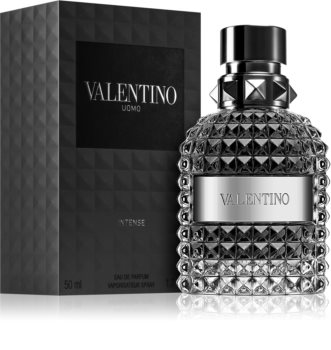

| Note de varf | SALVIE, AROMA DE MANDARINE SI PORTOCALE |
| Note de inima | IRIS, TONKA |
| Note de baza | VANILIE, PIELE |
| Grupe de parfumuri | PIELOASE |
Sticla parfumului evocă voința și dorința neîmblânzită de a face față tuturor obstacolelor lumii. Apa de parfum Valentino Uomo Intense a fost lansată în 2016.
